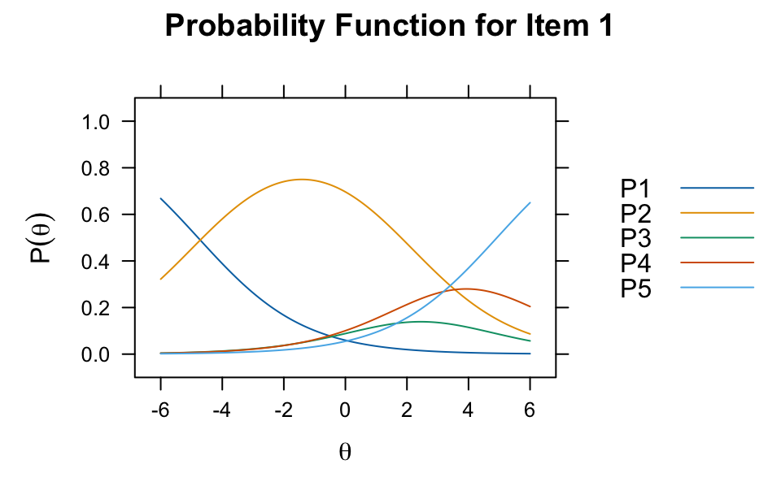
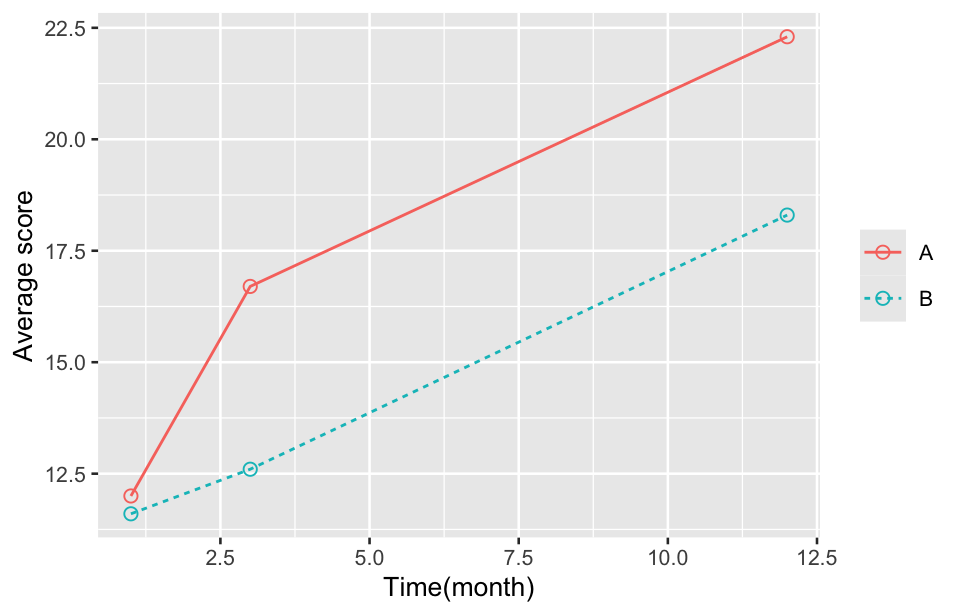

library(tidyverse)
library(performance)
library(psych)
library(mirt)
library(effectsize)30 Medical scales
Medical scales, also known as clinical or health assessment scales, are standardized tools used to measure various aspects of health, including physical functioning, psychological well-being, symptom severity, and quality of life. They are widely used in clinical practice, research, and patient self-assessments to provide objective data that can inform diagnoses, monitor changes over time, evaluate treatment outcomes, and enhance communication between healthcare providers and patients.
30.1 Prerequisite
30.2 Designing of medical scales
Understanding the structure of scales is key to constructing reliable, valid, and practical measurement tools. Their design not only determines the effectiveness of data collection but also affects the reliability and validity of the results.
30.2.1 Essential elements of scales
The following outlines the essential elements that compose a medical scale, the design principles, and the critical considerations in their construction.
1. Defining the objective of the scale
Before constructing a medical scale, clearly define its purpose. Is the scale intended to measure symptom severity, treatment efficacy, or patient-reported outcomes? Defining the objective helps determine the scope, target population, and the type of items to include, ensuring that each element aligns with the desired outcome.
Example: The Hamilton depression rating scale was designed to measure the severity of depression, focusing on symptoms such as mood, insomnia, and cognitive function.
2. Selecting and structuring items
Items are the questions or statements to which respondents provide answers. Each item should reflect a single, specific aspect of the concept being measured, avoiding ambiguity. The items are generally classified based on content, such as symptoms or behaviors, and must be relevant, easily interpretable, and culturally sensitive.
Item types:
- Direct symptom items: “How often do you feel fatigued?”
- Behavioral frequency items: “How many times per week do you experience loss of appetite?”
- Functional impact items: “To what extent does the condition impact daily activities?”
3. Response format and scaling
Response options provide the range through which respondents express the degree or frequency of the measured attribute. The choice of response format should balance ease of use with sensitivity to detect meaningful differences.
Types of response scales:
- Dichotomous: Yes/No answers, often used in preliminary screenings.
- Likert scale: Allows respondents to express agreement or intensity (e.g., 1-5).
- Frequency/severity scales: Ranges from “Never” to “Always” or “None” to “Severe.”
Consideration: A larger scale range may increase precision but could introduce response variability if it becomes too granular.
4. Scoring mechanism
The scoring system aggregates responses into a meaningful score that reflects the overall measure of the concept. This can be a simple sum, a weighted score, or a more complex formula if some items are given more importance.
- Summative Scoring: Adding up individual item scores for a total score.
- Weighted Scoring: Assigning higher weights to critical items to emphasize their importance.
- Interpreting Scores: Establishing cutoff points or score ranges to categorize outcomes, such as “mild,” “moderate,” or “severe.”
5. Reliability and validity testing
To ensure consistency and accuracy, a scale must undergo rigorous testing for reliability (e.g., test-retest reliability) and validity (e.g., construct validity).
- Reliability: Ensures that the scale consistently measures the concept over time and across contexts.
- Validity: Verifies that the scale truly measures what it intends to.
Each of these properties is critical in confirming that the scale will provide accurate and reproducible measurements in diverse settings.
6. Cultural and linguistic adaptation
If a scale will be used in diverse populations, cultural and linguistic adaptations must be made. This ensures relevance and accuracy in diverse contexts and avoids bias.
Translation and Adaptation Process:
- Forward and Backward Translation: Ensures the scale retains its meaning across languages.
- Cultural Relevance Review: Local experts assess the scale for cultural appropriateness.
7. Practical Considerations
Finally, practical elements such as the length of the scale, ease of administration, and respondent burden play a role in the scale’s overall usability in real-world settings. Shorter scales are generally preferred for quick assessments, while longer scales may provide more detailed insights but could risk higher drop-out rates.
30.2.2 Scale item selection
Item selection is a critical step in developing a high-quality scale, ensuring items are representative, clear, and capable of distinguishing among responses effectively. Thoughtful item selection lays the foundation for a scale’s validity and reliability, making it a useful, accurate tool in real-world applications.
1. Initial item generation and content review
Item selection begins with generating an initial pool of items, often informed by literature reviews, expert interviews, focus groups, or surveys to ensure comprehensive coverage of the target concept.
- Expert review: Submit the items to domain experts for content review to ensure that each item is relevant to the construct being measured.
- Participant interviews: Gather feedback from potential respondents via interviews or preliminary testing to assess the clarity and readability of the items.
2. Relevance analysis
Statistical methods or expert ratings can evaluate item relevance, helping to discard items that do not strongly align with the measurement goals.
- Rating method: Experts rate items based on relevance, retaining items with high scores.
- Content validity index (CVI): Calculate the CVI, which indicates the proportion of experts who rate an item as “relevant” or “highly relevant.” Items with a CVI above 0.8 are typically considered suitable.
3. Item discrimination analysis
Discrimination analysis helps identify items that effectively differentiate among respondent groups. Items with higher discrimination are more sensitive to varying levels of the construct being measured.
- Item-total correlation analysis: Use Pearson or Spearman correlations to assess the relationship between each item and the total score; items with correlations below 0.3 can be considered for removal.
- Internal consistency (reliability): Test the scale’s internal reliability using Cronbach’s alpha, eliminating items with low or negative contributions to reliability.
4. Simplicity and Comprehensibility
Items should be simple and easy to understand to avoid confusion and ensure respondents can answer accurately.
- Wording Review: Ensure items are clearly worded and avoid double negatives, ambiguous terms (e.g., “often,” “usually”), and technical jargon.
- Cognitive Interviewing: Test items in cognitive interviews to ensure that respondents interpret them as intended and to identify any ambiguities.
5. Adequate number of items
While an excess of items may lead to fatigue and diminish data quality, too few items may fail to capture the target construct comprehensively. Striking a balance between informativeness and response burden is crucial.
- Redundancy analysis: Evaluate items for redundancy, consolidating or removing highly correlated items.
- Balance comprehensiveness and conciseness: Ensure each subdimension has adequate item support without introducing unnecessary or repetitive items.
6. Pilot testing and data analysis
Pilot testing provides empirical data for further item refinement, using data-driven methods like factor analysis to evaluate the construct validity of each item.
- Exploratory factor analysis: Group items into potential factors to ensure a logical and coherent item structure.
- Confirmatory factor analysis: Verify the factor structure, ensuring the item structure aligns with the theoretical model.
Example 1:
In a pilot-survey on the quality of life among 206 patients with and without hypertension, an analysis was conducted on the quality of 12 items across three dimensions of the physical domain—namely, pain and discomfort, energy and fatigue, and sleep and rest.
df <- read_csv("datasets/ex30-01.csv", show_col_types = F) Item-total correlation analysis:
select(df, contains("f")) |>
sapply(function(x) {
test <- cor.test(~ x + score, data = df)
data.frame(
cor.coef = round(test$estimate, 3),
p.value = round(test$p.value, 3)
)
}) |>
knitr::kable()| f11 | f12 | f13 | f14 | f21 | f22 | f23 | f24 | f31 | f32 | f33 | f34 | |
|---|---|---|---|---|---|---|---|---|---|---|---|---|
| cor.coef | -0.166 | -0.226 | -0.24 | -0.089 | 0.243 | -0.181 | 0.227 | -0.276 | 0.212 | -0.317 | 0.237 | -0.316 |
| p.value | 0.027 | 0.002 | 0.001 | 0.241 | 0.001 | 0.016 | 0.002 | 0 | 0.005 | 0 | 0.002 | 0 |
Internal consistency (reliability)
select(df, contains("f")) |>
item_reliability()#> term alpha_if_deleted item_discrimination
#> 1 f11 0.521 0.087
#> 2 f12 0.424 0.469
#> 3 f13 0.410 0.537
#> 4 f14 0.442 0.392
#> 5 f21 0.581 -0.078
#> 6 f22 0.452 0.388
#> 7 f23 0.556 -0.046
#> 8 f24 0.424 0.465
#> 9 f31 0.553 -0.037
#> 10 f32 0.466 0.314
#> 11 f33 0.569 -0.080
#> 12 f34 0.475 0.27730.2.3 Item response theory
Item response theory (IRT) is a statistical framework used in psychometrics and educational testing to analyze the relationship between individual responses to assessment items (questions) and the latent traits or abilities those items aim to measure. Unlike traditional methods, IRT assumes that the probability of a specific response to an item is a function of both the item’s characteristics and the respondent’s underlying trait level. Here’s a structured breakdown:
1. Core principles of IRT
Latent trait: IRT models assume a latent trait (often referred to as “theta” or ability) that each respondent has, which influences their probability of a particular response. Examples of latent traits include intelligence, proficiency, or psychological characteristics like anxiety.
Item characteristics: Each item has specific properties that affect how it discriminates between respondents with different levels of the trait. These properties include difficulty, discrimination, and sometimes guessing.
2. Key IRT models
1-parameter logistic model (1PL), also known as the Rasch model, which assumes that items differ only in difficulty. In the 1PL model, only the difficulty of the item is taken into account.
P(X = 1 \mid \theta) = \frac{e^{\theta - b}}{1 + e^{\theta - b}}
where P(X = 1 \mid \theta) is the probability of a correct response (scored as 1), \theta is the latent trait or ability of the person, b is the difficulty parameter of the item.
This model assumes that all items have the same discrimination, meaning that each item is equally good at distinguishing between individuals with different ability levels.
2-parameter logistic model (2PL): This model adds an item discrimination parameter, allowing each item to have a different slope or discriminatory power.
P(X = 1 \mid \theta) = \frac{e^{a(\theta - b)}}{1 + e^{a(\theta - b)}}
where a is the discrimination parameter, indicating how steeply the probability changes with ability around the difficulty level. Other parameters are as defined above.
The discrimination parameter a makes the model more flexible, allowing it to account for items that are more or less sensitive to changes in the respondent’s ability.
3-parameter logistic model (3PL): This model includes an additional guessing parameter, which allows for a non-zero probability of correctly guessing the answer, even for low-ability individuals.
P(X = 1 \mid \theta) = c + (1 - c) \frac{e^{a(\theta - b)}}{1 + e^{a(\theta - b)}}
where c is the guessing parameter, representing the probability of a correct answer by guessing. Other parameters are as defined above.
The guessing parameter c accounts for the chance that respondents with very low ability might still answer the item correctly by guessing, which is particularly relevant for multiple-choice items.
3. Applications of IRT
Educational testing: IRT helps create adaptive tests, where the difficulty of subsequent questions depends on previous answers, providing a more precise estimate of a student’s ability.
Psychological assessments: Commonly used in psychological testing to refine and validate scales, such as those measuring depression, anxiety, or quality of life.
Test development and scaling: Allows for comparability of scores across different versions of a test by linking scales.
4. Advantages of IRT
Precision: Provides more detailed information about each item and the respondent’s ability level, compared to classical test theory.
Test adaptability: Allows for computerized adaptive testing (CAT), which can significantly reduce the number of items required to estimate a trait level accurately.
Invariance: The estimated item parameters remain stable across populations, assuming the model fits well, making scores more generalizable.
5. Interpreting IRT models
Item characteristic curve (ICC): Graphically represents the probability of a correct response as a function of the latent trait, showing how an item performs at different ability levels.
Item information function: Shows how much information an item provides about a specific ability level, which is crucial in test construction.
data <- select(df, contains("f"))
mod <- mirt(data, model = 1, verbose = F)
# Plot ICC
itemplot(mod, item = 1, type = 'trace') 
theta <- matrix(seq(-1,1, by = .1))
iteminfo(extract.item(mod, 2), theta)#> [1] 0.6214112 0.6176567 0.6140703 0.6115853 0.6109246 0.6125437 0.6166047
#> [8] 0.6229832 0.6313063 0.6410172 0.6514569 0.6619519 0.6718958 0.6808104
#> [15] 0.6883796 0.6944497 0.6990002 0.7020954 0.7038293 0.7042820 0.703496230.3 Reliability, validity and responsiveness
In the development and evaluation of scales, reliability, validity, and responsiveness are key properties that help ensure the tool’s utility and accuracy for measuring the intended construct. Here’s a structured overview of these three essential analyses:
30.3.1 Reliability
Reliability assesses the consistency of the scale over repeated applications or among different raters. Key methods include:
Internal consistency: Evaluates the consistency of items within a single scale, often using Cronbach’s alpha. A high Cronbach’s alpha (usually ≥0.70) indicates good internal consistency.
Test-retest reliability: Measures stability over time by administering the scale to the same subjects at two different points in time and calculating the correlation.
Inter-rater reliability: Assesses agreement among different raters, typically using Cohen’s kappa or intraclass correlation coefficient (ICC) for continuous measures.
30.3.2 Validity
Validity determines whether the scale accurately measures what it is intended to measure. Types of validity include:
Content validity: Ensures the scale items adequately cover the entire construct. This is often established through expert judgment.
Construct validity: Examines whether the scale reflects the theoretical construct it aims to measure. This can include:
- Convergent validity: Assesses whether scores are related to those from other scales measuring the same or similar constructs.
- Discriminant validity: Confirms that the scale does not correlate highly with measures of different constructs.
Criterion validity: Looks at how well the scale predicts or correlates with an established criterion, which can be:
- Concurrent validity: Compared against a current criterion.
- Predictive validity: Tested by determining how well the scale predicts future outcomes.
Example 2:
A doctor used the WHOQOL-100 scale to survey the quality of life of 50 healthy individuals, and repeated the survey one week later. The results are recorded in the data below. F1 to F24 represent the scores for the 24 dimensions from the first survey, T1 is the total score from the first survey, and T2 is the total score from the second survey. Q1 represents the respondents’ overall rating of their quality of life from the first survey, with a maximum score of 100 points.
df <- read_csv("datasets/ex30-02.csv", show_col_types = F) Cronbach’s alpha
select(df, contains("f")) |> cronbachs_alpha()#> [1] 0.8046482select(df, contains("f")) |> alpha(warnings = F, discrete = F) |> pluck(1)#> raw_alpha std.alpha G6(smc) average_r S/N ase mean
#> 0.8046482 0.7969285 0.9209604 0.1405358 3.924374 0.03665875 11.1575
#> sd median_r
#> 1.071537 0.1707912Construct validity
data <- select(df, contains("f"))
model <- '
F1 =~ f1 + f2 + f3
F2 =~ f4 + f5 + f6 + f7 + f8
F3 =~ f9 + f10 + f11 + f12
F4 =~ f13 + f14 + f15
F5 =~ f16 + f17 + f18 + f19 + f20 + f21 + f22 + f23
F6 =~ f24
'
lavaan::cfa(model, data, estimator = "ML") #> Warning: lavaan->lav_object_post_check():
#> some estimated lv variances are negative#> lavaan 0.6-19 ended normally after 123 iterations
#>
#> Estimator ML
#> Optimization method NLMINB
#> Number of model parameters 62
#>
#> Number of observations 50
#>
#> Model Test User Model:
#>
#> Test statistic 396.589
#> Degrees of freedom 238
#> P-value (Chi-square) 0.00030.3.3 Responsiveness
The responsiveness measures the ability of an instrument (like a survey or scale) to detect change over time, often in response to an intervention. This is particularly relevant in longitudinal studies, where the goal is to observe treatment effects or changes in condition.
There are several ways to quantify responsiveness, including standardized effect size measures, such as the standardized response mean, Cohen’s d, and responsiveness index. Minimal clinically important difference defines the smallest change that is meaningful to patients, thus aiding interpretation of scale changes. Here’s an overview of how to calculate some of these in R:
Example 3:
A psychiatrist developed a neurosis scale to evaluate improvements in neurotic symptoms among patients with psychological disorders. The scale was used to assess 72 psychiatric inpatients before and after treatment. Measurement data can be downloaded from the link below. Calculate the responsiveness of this scale.
The standardized response mean is calculated as the mean change score divided by the standard deviation of the change scores.
df <- read_csv("datasets/ex30-03.csv", show_col_types = F)
df |>
summarize(srm = mean(X2 - X1) / sd(X2 - X1))#> # A tibble: 1 × 1
#> srm
#> <dbl>
#> 1 0.842Cohen’s d is another standardized effect size, which is the mean difference between two time points divided by the pooled standard deviation. We can use the cohens_d() function from effectsize packages to compute the effect size indices for standardized differences due to different cases:
cohens_d("X2", "X1", data = df, paired = T, verbose = F)#> Cohen's d | 95% CI
#> ------------------------
#> 0.84 | [0.57, 1.11]Each of these properties is crucial for ensuring that a scale is not only statistically sound but also practically applicable for its intended clinical or research purpose. Evaluating reliability, validity, and responsiveness through carefully chosen statistical analyses provides confidence in the scale’s results and insights into patient outcomes.
30.4 Medical application of scales
Example 4:
In a clinical study evaluating the efficacy of two chemotherapy regimens, quality of life was used as an outcome measure. Cancer patients were randomly divided into two groups: Group A received a low-dose combination chemotherapy regimen, while Group B received a high-dose monotherapy regimen. Each group included 10 patients, and quality of life was assessed 1 month, 3 months, and 12 months after chemotherapy. The scale consisted of 5 items, with each item scored from a minimum of 1 to a maximum of 5, resulting in a total score range of 5 to 25. The survey results for both groups are recorded in the data below.
df <- read_csv("datasets/ex30-04.csv", show_col_types = F) - Separate a character column into multiple columns with a regular expression.
The primary concern of the analysis is whether there is a difference in treatment effects (quality of life) between the two groups. This difference includes whether the trend in changes after treatment is the same—that is, whether the rise and fall of the curves are consistent—and whether the quality of life levels of patients after treatment are similar, meaning whether the two curves coincide on the vertical axis. Here the profile analysis method is applied to the data.
tb <- df |>
pivot_longer(everything(), names_to = "time", values_to = "score") |>
separate(time, sep = "_", into = c("group", "time"), convert = T) |>
pivot_wider(
names_from = "time", names_prefix = "t",
values_from = "score", values_fn = list) |>
unnest()#> Warning: `cols` is now required when using `unnest()`.
#> ℹ Please use `cols = c(t1, t3, t12)`.res <- with(tb, profileR::pbg(cbind(t1, t3, t12), group = group, original.names = T))
res |> summary()#> Call:
#> profileR::pbg(data = cbind(t1, t3, t12), group = group, original.names = T)
#>
#> Hypothesis Tests:
#> $`Ho: Profiles are parallel`
#> Multivariate.Test Statistic Approx.F num.df den.df p.value
#> 1 Wilks 0.7471198 2.877024 2 17 0.08391063
#> 2 Pillai 0.2528802 2.877024 2 17 0.08391063
#> 3 Hotelling-Lawley 0.3384735 2.877024 2 17 0.08391063
#> 4 Roy 0.3384735 2.877024 2 17 0.08391063
#>
#> $`Ho: Profiles have equal levels`
#> Df Sum Sq Mean Sq F value Pr(>F)
#> group 1 40.14 40.14 4.083 0.0584 .
#> Residuals 18 176.94 9.83
#> ---
#> Signif. codes: 0 '***' 0.001 '**' 0.01 '*' 0.05 '.' 0.1 ' ' 1
#>
#> $`Ho: Profiles are flat`
#> F df1 df2 p-value
#> 1 22.38023 2 17 1.728925e-05pluck(res, "data.summary") |>
t() |>
as_tibble(rownames = "group") |>
pivot_longer(
c(t1, t3 ,t12), names_to = "time", names_prefix = "t",
values_to = "score", names_transform = list(time = as.integer)) |>
ggplot(aes(x = time, y = score, color = group, linetype = group)) +
geom_point(shape = 1, size = 2) +
geom_line() +
labs(x = "Time(month)", y = "Average score") +
theme(legend.title = element_blank())